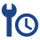
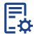

Asset register
Tahu aset apa yang dimiliki, berada di mana, siapa penanggung jawabnya, dan bagaimana kondisinya.
Identitas · lokasi · dokumen · warrantyAsset & maintenance management
Aseta membantu tim memusatkan data aset, merencanakan preventive maintenance, mengelola work order, dan melihat kesehatan aset tanpa berpindah-pindah spreadsheet.
Self-assessment
Jawab lima pertanyaan. Anda akan mendapatkan rekomendasi tingkat solusi dan langkah mulai—termasuk bila Aseta belum menjadi prioritas.
Pilih satu jawaban untuk melanjutkan.
Mulai mandiri
Anda dapat memulai dengan ruang lingkup kecil. Tidak perlu memindahkan seluruh proses pada hari pertama.
Simulasikan kebutuhan →Tentukan aset, lokasi, criticality, dan masalah yang ingin diselesaikan lebih dulu.
Satukan identitas aset, dokumen, vendor, warranty, dan riwayat dalam struktur yang konsisten.
Buat preventive schedule, work order, inspeksi, spare part, dan penugasan teknisi.
Lihat backlog, overdue, downtime, biaya, dan kepatuhan untuk menentukan prioritas berikutnya.
Kapabilitas inti
Jelajahi fungsi berdasarkan keputusan yang perlu dibuat tim, bukan sekadar daftar modul.
Tahu aset apa yang dimiliki, berada di mana, siapa penanggung jawabnya, dan bagaimana kondisinya.
Identitas · lokasi · dokumen · warranty
Ubah jadwal berkala menjadi pekerjaan yang terukur agar maintenance tidak hanya bergerak saat terjadi kerusakan.
Preventive · corrective · inspection
Pantau permintaan, penugasan, SLA, status, dan hasil pekerjaan dari satu antrean kerja.
Request · approval · assignment · closureHubungkan kebutuhan suku cadang dan biaya dengan pekerjaan agar keputusan perbaikan lebih lengkap.
Stock · usage · vendor · cost historyBerikan manajemen gambaran kesehatan aset, backlog, downtime, dan kepatuhan tanpa rekap manual.
KPI · trend · audit trail · exportSesuaikan akses dan alur persetujuan dengan struktur organisasi dan tanggung jawab operasional.
Role-based · approval · activity logValue simulator
Masukkan angka nyata dari operasi Anda. Simulator ini menghitung dampak finansial dari downtime dan perbaikan reaktif, lalu memperkirakan penghematan yang bisa dicegah melalui maintenance terencana.
Model: kerugian tahunan = (downtime × biaya/jam × 12) + (perbaikan reaktif × 12). Penghematan dihitung dari target pengurangan breakdown, di luar efisiensi admin dan biaya overdue. Angka adalah simulasi berdasarkan input Anda—bukan jaminan hasil, bukan penawaran harga.
Ubah slider untuk melihat simulasi. Validasi angka ini dengan kondisi proses Anda saat assessment implementasi.
Keputusan yang jujur
Tidak semua organisasi perlu platform EAM/CMMS sekarang. Kejelasan ini membantu Anda mengambil keputusan tanpa tekanan.
Anda cocok jika: jumlah aset bertambah, pekerjaan maintenance berulang, dan tim membutuhkan status serta riwayat yang dapat dipercaya.
Anda cocok jika: manajemen membutuhkan laporan kondisi aset, biaya, kepatuhan, atau backlog lintas lokasi.
Belum prioritas jika: aset sangat sedikit, pekerjaan tidak berulang, dan proses manual masih mudah dikendalikan oleh satu orang.
Perlu evaluasi lebih lanjut jika: Anda membutuhkan ERP/accounting penuh; Aseta berfokus pada aset dan maintenance, bukan pengganti semua sistem bisnis.
FAQ
Masih ada yang belum jelas? Gunakan pertanyaan ini sebagai checklist evaluasi internal.
Tidak untuk memahami kecocokan awal. Anda dapat menyelesaikan assessment dan simulator terlebih dahulu. Untuk konfigurasi, migrasi, integrasi, atau scope enterprise, diskusi teknis tetap dapat dijadwalkan sebagai langkah lanjutan.
Tidak. Kebutuhannya dapat muncul pada fasilitas, gedung, warehouse, fleet, hospitality, utilitas, dan operasi lain yang memiliki aset serta pekerjaan maintenance berulang.
Aseta berfokus pada asset lifecycle dan maintenance management. Integrasi dengan sistem akuntansi atau ERP dapat dievaluasi berdasarkan kebutuhan organisasi.
Mulai dari satu lokasi, satu kategori aset, atau satu alur preventive maintenance. Setelah struktur dan manfaat tervalidasi, cakupan dapat diperluas bertahap.
Investasi biasanya bergantung pada jumlah aset, jumlah user, lokasi, modul, kebutuhan implementasi, dan integrasi. Gunakan assessment untuk menyusun scope awal sebelum meminta penawaran—bukan meeting panjang untuk mengetahui kebutuhan dasar.
Langkah berikutnya
Isi assessment, lihat simulasi, lalu bawa hasilnya ke tim Anda. Konsultasi tersedia bila dibutuhkan—tetapi bukan syarat untuk memahami Aseta.